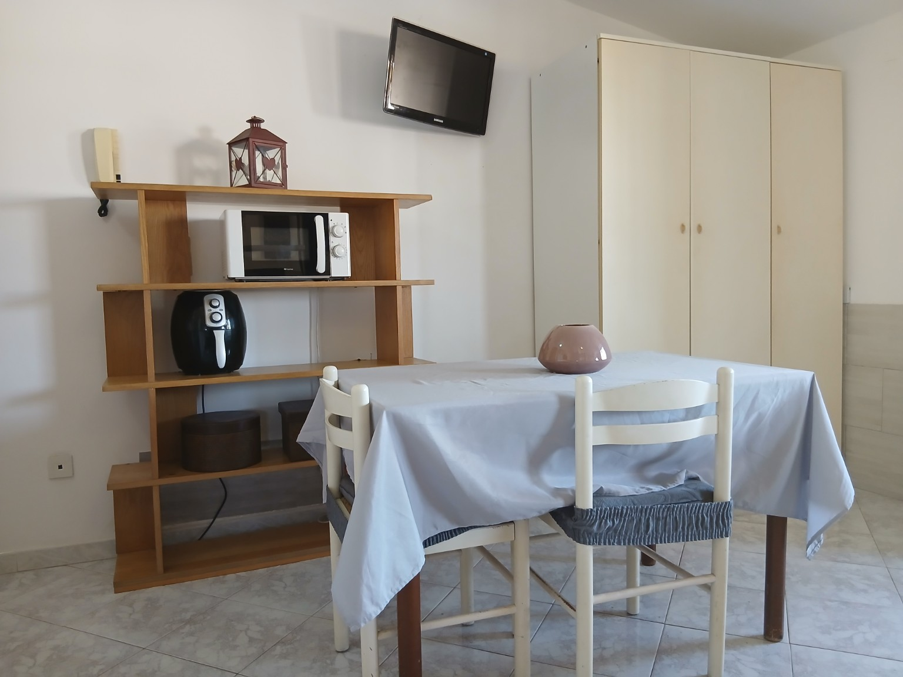
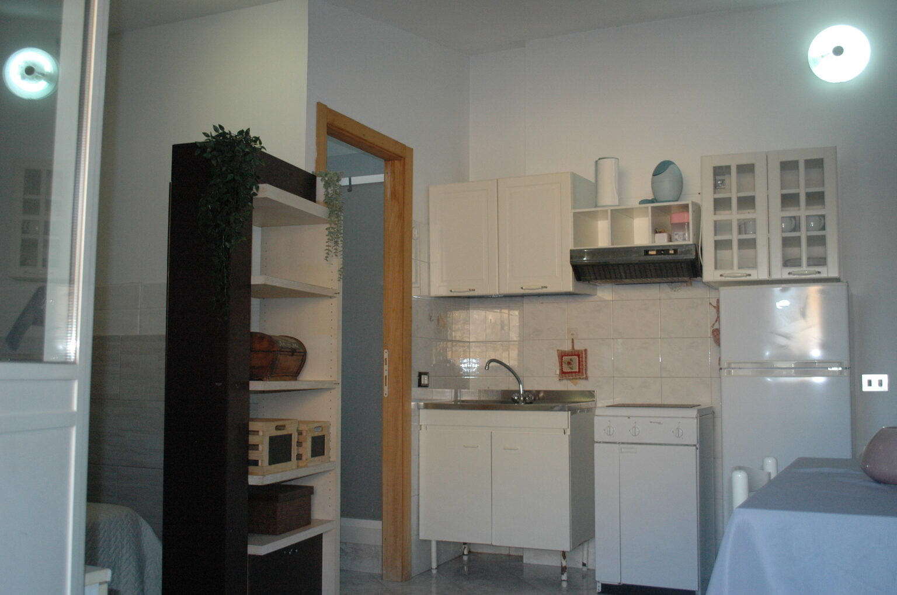
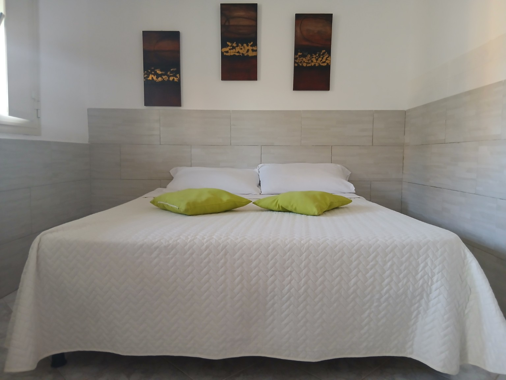
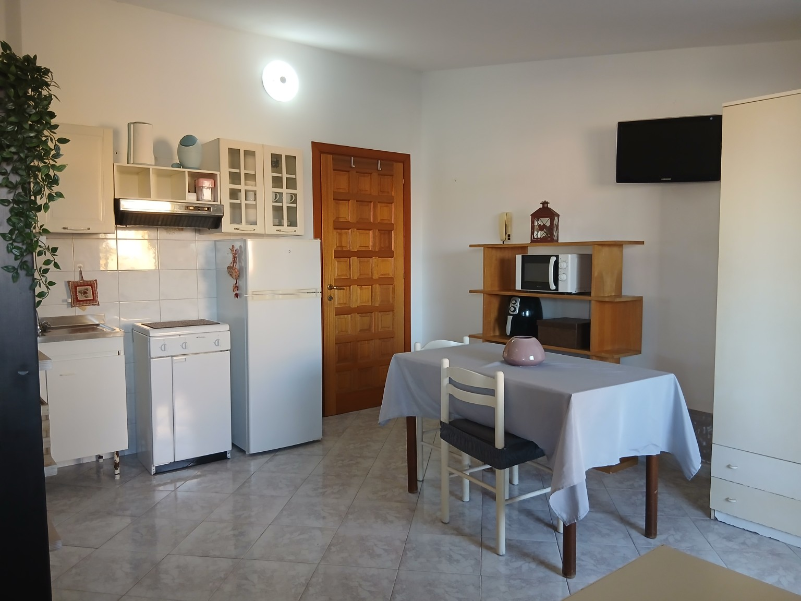
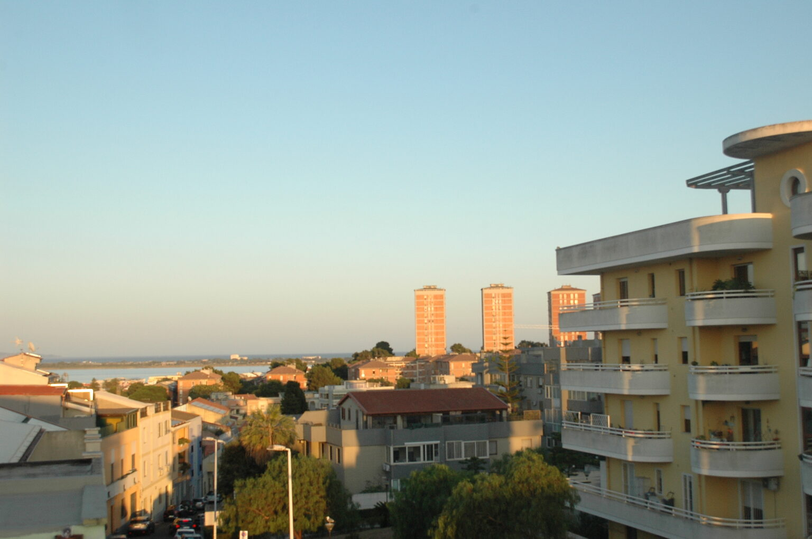
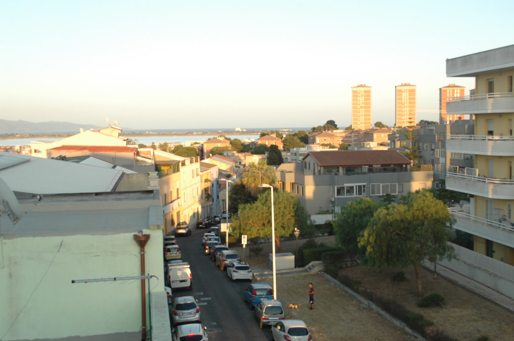
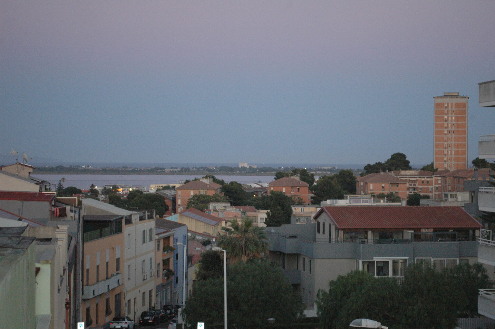
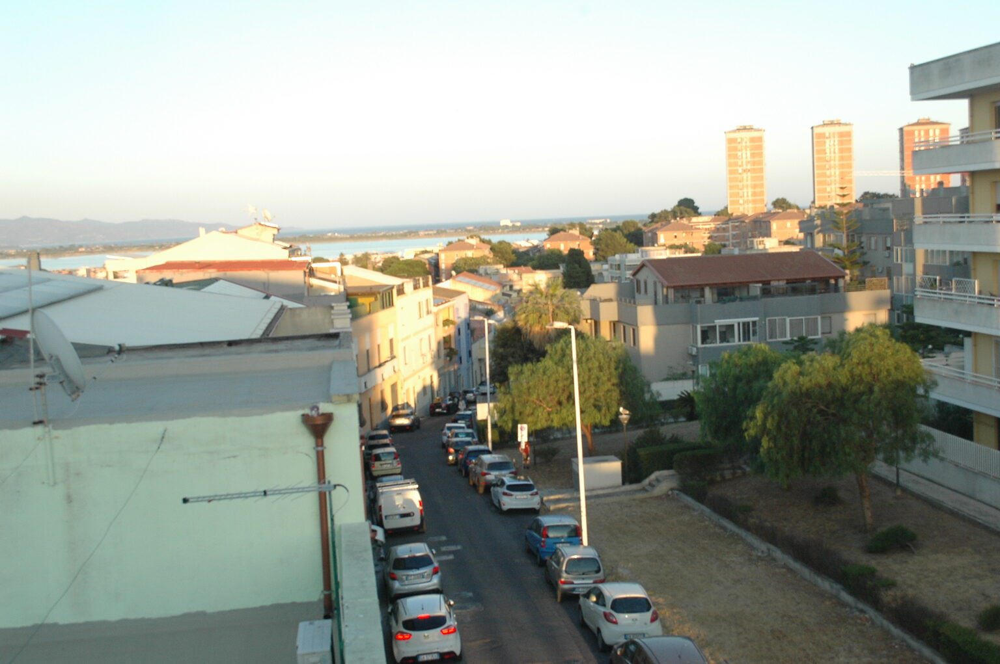
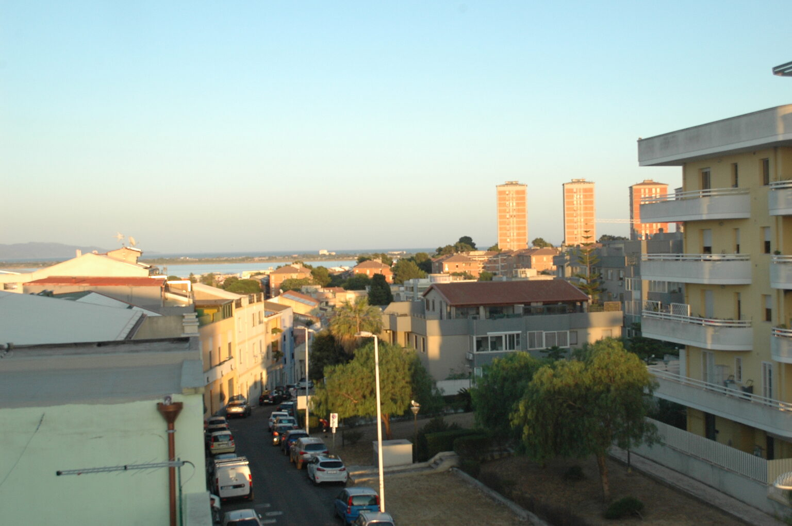

Arrivo organizzato
Angelo e Viviana inviano le indicazioni per raggiungere la casa e organizzare l'arrivo prima del soggiorno.
Soggiorno a Pirri, Cagliari
Un soggiorno luminoso a Pirri, con vista verso il mare e il Poetto.
Accoglienza diretta di Angelo e Viviana e un Concierge digitale riservato agli ospiti per vivere meglio Cagliari.
La casa
Un monovano di circa 33 m² in Via Bellavista 14, a Pirri, per un massimo di 2 ospiti. Letto matrimoniale, angolo cottura e bagno privato: tutto raccolto in uno spazio da vivere con tranquillità.
Il balcone apre lo sguardo verso Cagliari e il mare. L'alloggio si trova al terzo piano senza ascensore: considera le scale quando organizzi il soggiorno.
Gli spazi
Le fotografie dell'alloggio e della vista dal balcone.










Angelo e Viviana
Angelo e Viviana inviano le indicazioni per raggiungere la casa e organizzare l'arrivo prima del soggiorno.
Pirri è una posizione pratica per muoversi verso Cagliari, aeroporto, ospedali e costa del Sud Sardegna.
Per una domanda o un consiglio, Angelo e Viviana restano il tuo riferimento prima e durante il soggiorno.
Concierge
Angelo e Viviana hanno raccolto e verificato consigli per aiutarti a vivere Cagliari. Il Concierge digitale incluso nel soggiorno organizza spiagge, ristoranti, luoghi da vedere, mobilità e informazioni pratiche.
La tecnologia organizza le informazioni. Angelo e Viviana restano il riferimento dell’ospite.
Accesso riservato agli ospiti Piccolabellavista. Disponibile in italiano, inglese e tedesco.Il mare vicino
Dal Poetto alle baie della costa verso Villasimius: un assaggio del territorio. Nel Concierge trovi i consigli di Angelo e Viviana per organizzare la giornata.
La lunga spiaggia di Cagliari, tra mare e passeggiate sul lungomare.
IndicazioniUna piccola baia tra i promontori di Cagliari.
IndicazioniUna cala rocciosa dal carattere più selvaggio, con accesso a piedi su terreno irregolare.
IndicazioniIl litorale di Quartu, con vista aperta sul Golfo degli Angeli.
IndicazioniUna lunga spiaggia sulla costa verso Villasimius.
IndicazioniCagliari
Quartieri storici, scorci sul porto e natura: scegli da dove cominciare.
Vicoli del quartiere alto e terrazze affacciate sulla città.
IndicazioniIl paesaggio delle saline e degli stagni, tra città e mare.
IndicazioniIl promontorio simbolo del Golfo, da scoprire a piedi con calzature adatte.
IndicazioniLe strade del quartiere vicino al porto, tra botteghe e vita cittadina.
IndicazioniNel Concierge trovi la selezione completa di Angelo e Viviana, riservata agli ospiti.
Angelo e Viviana hanno raccolto le cose essenziali che possono servire durante il soggiorno. Apri la ricerca sulla mappa per controllare sedi, orari e percorsi aggiornati.
Posizione
Pirri è un quartiere di Cagliari fuori dal centro storico. Una posizione pratica per raggiungere aeroporto, ospedali Brotzu, Oncologico e Microcitemico e le strade verso Villasimius e il Sud Sardegna.
IndicazioniCentro di Cagliari e Poetto: circa 15–20 minuti in auto, secondo traffico. Aeroporto facilmente raggiungibile in auto. Parcheggio libero in zona, senza posto riservato.
Disponibilità
Compila il modulo: WhatsApp si aprirà con la richiesta pronta. Premi invio su WhatsApp per trasmetterla ad Angelo e Viviana.
FAQ
Massimo 2 ospiti, con letto matrimoniale.
L’alloggio è al terzo piano senza ascensore.
Gli animali non sono ammessi.
Parcheggio libero in zona, secondo disponibilità; non è previsto un posto riservato.
Angelo e Viviana indicano gli orari nella proposta prima della conferma e organizzano con te l’arrivo.
Wi-Fi, climatizzatore portatile, TV, angolo cottura, microonde e lavatrice.
La richiesta non conferma il soggiorno. Angelo e Viviana inviano disponibilità, prezzo, acconto, condizioni di cancellazione ed eventuale imposta di soggiorno nella proposta da accettare.
Contatti
Chiedi direttamente disponibilità o informazioni per organizzare il tuo soggiorno.